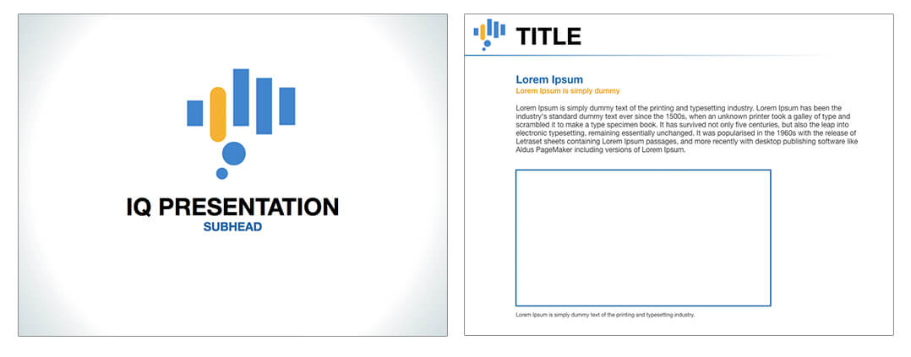
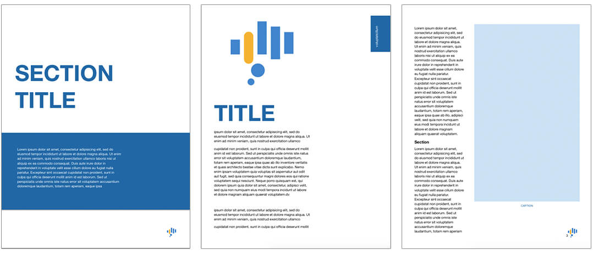

IQ is an app developed by Constellation for presenting their brand material. The request was to create a logo that relates to Constellation and conveys an analytics tool.
After the logo was approved we created the brand guidelines. The logo would be used in print, web, and potentially on mercahndise.
The logo would be used extensively for presentations and we created a few PowerPoint and Word templates.
